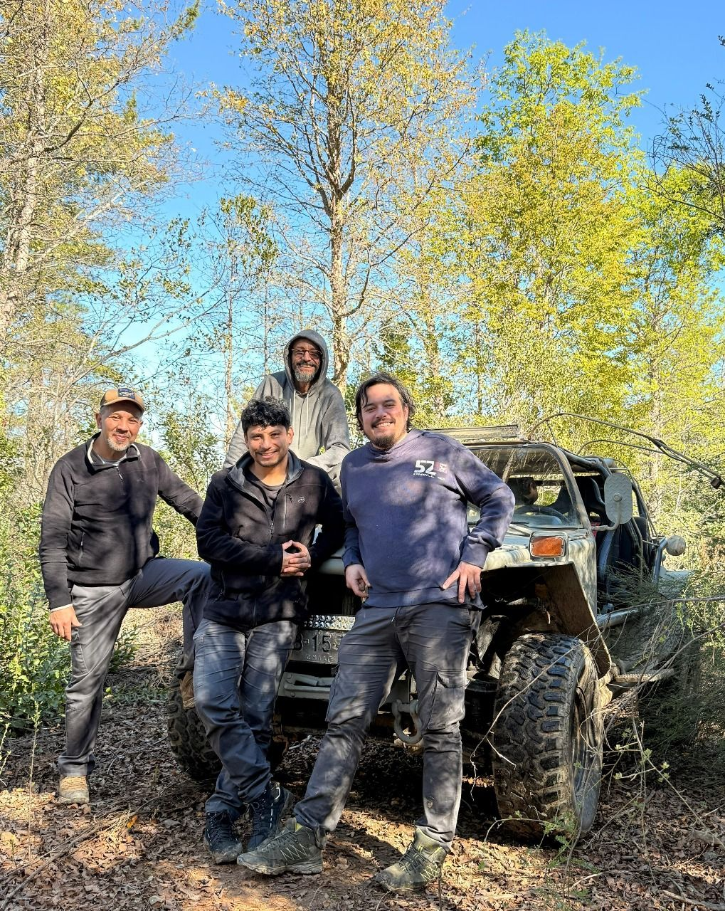
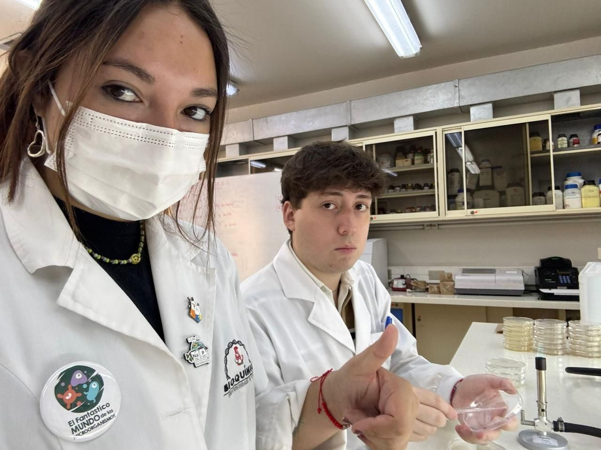
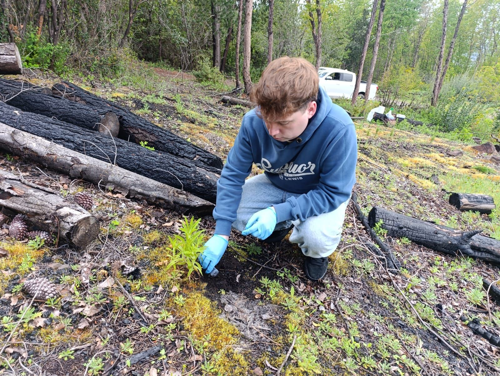

Equipo
Las personas tras el trabajo de investigación, desde el campo y los muestreos hasta el laboratorio, los análisis y las publicaciones.
Dra. Andrea Barrera
Coinvestigadora
Bióloga marina y microbióloga.
Dr. (c) Roberto Miño
Estudiante de doctorado
Bioinformático, especialista en biología molecular.
Cristian Ascencio
Estudiante de Bioquímica
María José Ramírez
Asistente técnica
Vivero y laboratorio.


